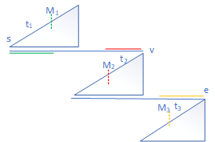

Binary Search
1. Inroduction to binary search
The key idea of binary search starts from the time complexity, which comes from the following equation.
$$\begin{equation}\label{eq1}
T(n) = T(n/2) + O(1) = O(\log n) \tag{1}
\end{equation}$$
Suggestion: If there exists an algorithm run in $O(n)$ time, the potential way to optimize it is to introduce binary search to do it in $O(\log n)$ time.
An interersting equations is given below.
$$\begin{equation}\label{eq2}
T(n) = T(n/2) + O(n) = O(2n) \tag{2}
\end{equation}$$
2. Time complexity to different problems
| time complexity | possible problems |
|---|---|
| $O(1)$ | rare |
| $O(\log n)$ | almost binary search |
| $O(\sqrt n)$ | factorization |
| $O( n)$ | all |
| $O(n^2)$ | array, enumerate, DP |
| $O(n^3)$ | array, enumerate, DP |
| $O(2^n)$ | combination |
| $O(n!)$ | permutation |
3. Template for binary search
def findPos(nums, target):
if nums is None or len(nums) == 0:
return
#
start, end = 0, len(nums) - 1
while start + 1 < end:
mid = start + (end - start) // 2 # for out of bounds
# nums[mid] ==, <, >
if nums[mid] == target:
return mid
elif nums[mid] < target:
start = mid
else: # nums[mid] > target
end = mid
# nums[start], nums[end] ? target
if nums[start] == target:
return start
if nums[end] == target:
return end
return -14. Applications
- example 1. the first/last position to be satisfied.
- example 2. search big sorted array with no end.
- example 3. search in rotated sorted array.
Problem 1
to be continued…
Problem 2
Consider the problem 2. The idea is similar to exponential backofff. The code is given below.
def searchInBigSorted(ArrayReader, target):
start = 0
end = 2
while start + 1 < end:
mid = (start + end) // 2
val = ArrayReader[mid]
if val >= target:
end = mid
else:
temp = start
start = mid
end = temp + (mid - temp) * 4
if ArrayReader[start] == target:
return start
if ArrayReader[end] == target:
return end
return -1Problem 3
Consider the problem 3. We observe that it is not a standard sorted array. However, it has a property indicating that we can cut it in half. This means that the orginial problem can be partitioned to two half problems that has the same property as the orginial one.
As it shown in Fig. 1(a), we can use the first element and last element to decide in which sorted part the current middle number is. In particular, if it is mid>end, it is in the 1st part. Otherwise, it is in the part I. Consider that the mid is in the 1st part I. It must satisfy mid>target>=start, it can follow the binary search to make end = mid. If mid is in the 2nd part, it must satisfy mid<target<=target so that it can follow the binary search to make start= mid.
 rotated sorted array") |
 |
|---|
Similar to the discussion above, we can solve the modified version. The code is given below.
def searchInRotatedSorted(nums, target):
if nums is None or len(nums) == 0:
return
start, end = 0, len(nums) - 1
while start + 1 < end:
mid = start + (end - start) // 2 # for out of bounds
# nums[mid] ==, <, >
if nums[mid] == target:
end = mid
elif nums[mid] >= nums[start]: # case1: mid is green
if nums[mid]> target and target >= nums[start]:
end = mid
else:
start = mid
elif nums[mid] <= nums[end]: # case2: mid is yellow
if nums[mid]< target and target <= nums[end]:
start = mid
else:
end = mid
else: # case3: mid is red
if nums[mid] < target:
if target < nums[start]:
start = mid
else:
end = mid
else: # nums[mid] > target
if target > nums[end]:
end = mid
else:
start = mid
# nums[start], nums[end] ? target
if nums[start] == target:
return start
if nums[end] == target:
return end
return -1Notice that in the middle part, we need to compare the target and mid firstly to divide the cases in half.
Problem 4
Find the median in two sorted arrays.
The key idea is to sperate the two arrays in two parts. Assuming len(A) < len(B), where m = len(A) and n = len(B).
if (m + n) % 2 == 1, the first part (smaller part, part of A and part of B) contains (m+n+1)/2 number.
if (m + n) % 2 == 0, the first part contains (m+2)/2 number.
So, we set the first part to have (m+n+1)//2 number. eg. if total is 15, the 1st part has 8. If total is 16, the 1st part is 8.
To cut A into two subparts, we use index i to represent cutting point of A
| A[0] | A[1] | ... | A[i-1] | A[i] | ... |A[m-1] |i = 0 1 2 … i-1 i … m-1 m
Thus, the index i is in [0, m]. So the cutting point j of B is that j = (m+n+1)//2 - i. Then, two conditions are going to be discussed.
if A[i-1] > B[j]: # first condition
end = i - 1
if A[i] < B[j-1]: # second condition
start = i + 1Note that
- For the 1st condition, we need to guarantee that i > 0 and j < n.
- For the 2nd condition, we need to guarantee that i < m and j > 0.
The last step to make sure is that the break condition is
while start <= end:This is because when start = end, we need to do another computation to obtain the index i = (start + end)//2
So the coding is shown as:
def two_sorted_arrays(A,B)
if len(A) > len(B):
A, B = B, A
m, n = len(A), len(B)
start, end = 0, m
while start <= end:
i = (start + end) // 2
j = (m + n + 1)//2 - i
if i > 0 and j < n and A[i-1] > B[j]:
end = i - 1
continue
if i < m and j > 0 and A[i] < B[j-1]:
start = i + 1
continue
break
left = -sys.maxsize
if i > 0: left = max(left, A[i-1])
if j > 0: left = max(left, B[j-1])
if (m+n)%2 == 1: return left
right = sys.maxsize
if i < m: right = min(right, A[i])
if j < n: right = min(right, B[i])
return (left+right)/2Todo
- wood cut https://yeqiuquan.blogspot.com/2017/03/lintcode-183-wood-cut.html
- copy books https://yeqiuquan.blogspot.com/2017/03/lintcode-437-copy-books.html
- search a 2D Matrix II https://leetcode.com/problems/search-a-2d-matrix-ii/
- search-for-range https://yeqiuquan.blogspot.com/2016/03/search-for-range.html
- count-of-smaller-number https://www.lintcode.com/problem/count-of-smaller-number/description
- recover Rotated Sorted Array https://www.lintcode.com/problem/recover-rotated-sorted-array/description
- rotate string http://www.lintcode.com/problem/rotate-string/
本博客所有文章除特别声明外，均采用 CC BY-SA 4.0 协议 ，转载请注明出处！